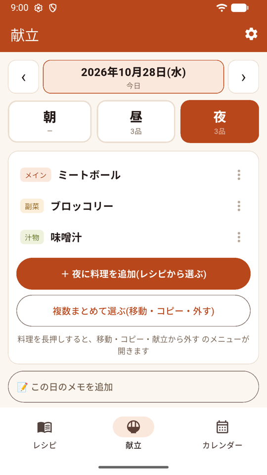
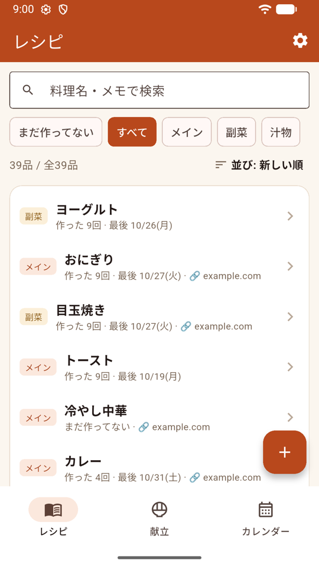
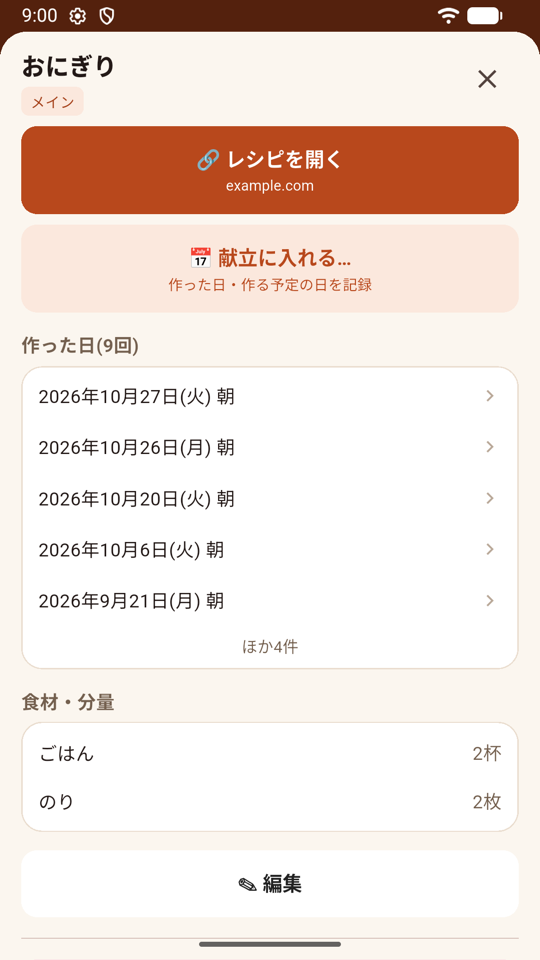
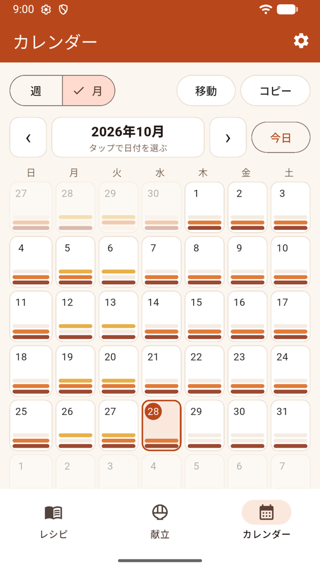

画面
横にスクロールすると、ほかの画面も見られます。
週のカレンダー

献立

レシピ一覧

料理の詳細

月のカレンダー
できること
料理を貯めて、献立を記録して、あとから見返す。必要なことだけをまとめました。
-
「共有」で料理を保存
レシピサイトやアプリの「共有」から、料理をそのまま保存できます。
-
料理ごとに記録
材料、メモ、レシピURL、作った日の記録を料理ごとに管理できます。
-
朝・昼・夜で献立を記録
献立は日付と朝・昼・夜で記録します。区切りの数や名前(弁当、おやつなど)も変えられます。
-
カレンダーで見渡す
週・月の献立をカレンダーで一覧できます。長押しで別の日へ移動・コピーもできます。
-
絞り込みと並べ替え
「まだ作ってない」料理や分類で絞り込んだり、よく作る順に並べ替えたりできます。
-
「元に戻す」で取り消し
間違えて動かしたり外したりしても、「元に戻す」で取り消せます。
-
バックアップ
データの書き出し・読み込みができるので、機種変更のときも引き継げます。
初めて開いたときは、各画面の使い方をサンプルのデータで案内します。
プライバシーポリシー
「うちの献立」(以下「本アプリ」)における利用者の情報の扱いについて説明します。
保存するデータ
本アプリに登録した料理・献立・メモなどのデータは、お使いの端末の中にだけ保存されます。開発者のサーバーに送信したり、開発者が収集したりすることはありません。アカウントの登録も不要です。
レシピのページの読み込み
ほかのアプリから URL を共有して料理を保存するとき、料理名を自動で入れるために、端末からそのページを直接読み込みます。読み込んだ内容は料理名の取得にだけ使います。
広告
本アプリは広告の表示に Google AdMob を使用しています。広告の配信のため、広告 ID などの端末の情報が Google に送信されることがあります。Google による情報の扱いについては、次のページをご覧ください。
バックアップ
バックアップを書き出すと、利用者が選んだ保存先(Google ドライブなど)にデータのファイルが保存されます。本アプリをアンインストールすると端末内のデータは消えるため、機種変更やアンインストールの前にバックアップを書き出してください。
お問い合わせ
お問い合わせは、Google Play の本アプリのページに記載の連絡先までお願いします。
改定
このポリシーは、必要に応じて改定することがあります。改定したときは、このページでお知らせします。
制定日: 2026年11月23日